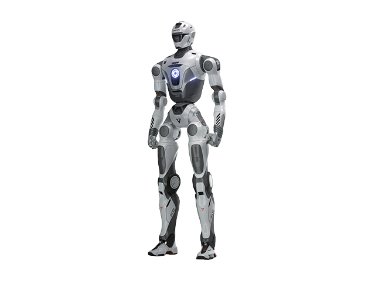

EngineAIChina
T800
- Announced
- Over 40 kg
- Logistics
VariantsBasic EditionOpen Source EditionPro EditionMax Edition
The manufacturer sells this model in several variants. The figures on this page apply to the variant the source names.
Key figures as stated by the manufacturer
3 of 6 stated · 3 gapsAnnounced- Weight 75–85kg165–187lbOur conversion from 75–85 kg. The manufacturer does not state an imperial figure itself, so the conversion has no source of its own.A
- Payload, walking not statedA
- Runtime 180–300minWarning: load condition not statedA
- Max speed at least 7.2km/hat least 4.47mphOur conversion from 7.2 km/h. The manufacturer does not state an imperial figure itself, so the conversion has no source of its own.A
- IP rating not statedA
- Indicative price not stated
- 14kgA
- A superscript letter after a figure points to the source the figure came from. Robots with several sources carry several letters.
- Payload, walking
- A stroke before a field name means the figure carries a caveat that affects how it compares with other robots. The caveat is printed with the figure.
- 74.5lb
- Imperial figures are our own conversion unless the manufacturer states an imperial figure itself. The source letter always belongs to the metric figure — a conversion has no source of its own.
Deviations and variants in the key figures (6)
Weight
NoteGiven as a range that varies with configuration, the same for all four editions.
Payload, walking
NoteOnly a hand figure is given, "a payload capacity of 5 kg" per dexterous hand; it is not a whole-robot payload.
Runtime
CaveatThe same range for all four editions, with no load or task condition; the highlights section also states up to 4 hours of continuous operation.
Max speed
CaveatThe producer marks the figure as what the hardware supports, not as a demonstrated speed; the same for all four editions.
IP rating
NoteNo ingress-protection rating is given on the page.
Indicative price
NoteThe page has a purchase button but shows no price.

Manufacturer's own photo.
Intended use, per the manufacturer
The manufacturer’s words
Logistics Warehouse
Source: en.engineai.com.cn · Retrieved
This category is not our assessment.
Every field in the schema
5 of 33 fields statedImperial figures are our own conversion unless the manufacturer states an imperial figure itself. The source letter always belongs to the metric figure — a conversion has no source of its own.
| Field | Value | Source and caveats |
|---|---|---|
| Physical | ||
| Weight | 75–85kg165–187lbOur conversion from 75–85 kg. The manufacturer does not state an imperial figure itself, so the conversion has no source of its own. | A NoteGiven as a range that varies with configuration, the same for all four editions. |
| Length | not stated | A NoteNo dimensions other than the height are given; leg length is 91 cm and single-arm length 60 cm. |
| Width | not stated | A NoteNo dimensions other than the height are given; leg length is 91 cm and single-arm length 60 cm. |
| Height | 173cm68.1inOur conversion from 173 cm. The manufacturer does not state an imperial figure itself, so the conversion has no source of its own. | A CaveatSame for all four editions; the page does not say in which posture the robot is measured. |
| Degrees of freedom | not stated | A CaveatThe editions differ: 25 (Basic and Open Source), 29+14 (dexterous hand)=43 (Pro), 32+14 (dexterous hand)=46 (Max). The highlights section states 29 excluding the dexterous hand. |
| Payload, walking | not stated | A NoteOnly a hand figure is given, "a payload capacity of 5 kg" per dexterous hand; it is not a whole-robot payload. |
| Payload, standing | not stated | A NoteOnly a hand figure is given, "a payload capacity of 5 kg" per dexterous hand; it is not a whole-robot payload. |
| Max speed | at least 7.2km/hat least 4.47mphOur conversion from 7.2 km/h. The manufacturer does not state an imperial figure itself, so the conversion has no source of its own. | A CaveatThe producer marks the figure as what the hardware supports, not as a demonstrated speed; the same for all four editions. |
| Max slope | not stated | A NoteNo maximum incline is given on the page. |
| Single obstacle | not stated | A NoteNo obstacle height is given on the page. |
| Stair step, continuous | not stated | A NoteNo stair step height is given on the page. |
| IP rating | not stated | A NoteNo ingress-protection rating is given on the page. |
| Operating temperature, low | not stated | A NoteNo operating-temperature range is given on the page. |
| Operating temperature, high | not stated | A NoteNo operating-temperature range is given on the page. |
| Power | ||
| Battery | not stated | A NoteThe page describes a modular solid-state lithium battery but gives no capacity. |
| Runtime | 180–300minWarning: load condition not stated | A CaveatThe same range for all four editions, with no load or task condition; the highlights section also states up to 4 hours of continuous operation. |
| Hot-swap battery | not stated | A CaveatThe page says the battery can be quickly removed; it does not say the robot stays powered during a swap. |
| Charge time | not stated | A NoteNo charging time is given on the page. |
| Docking station | not stated | A NoteNo charging dock is mentioned on the page. |
| Sensing and autonomy | ||
| LiDAR | not stated | A CaveatThe editions differ: the Basic Edition has "/" in the 3D LiDAR row, the Open Source, Pro and Max Editions are marked as having one. |
| Cameras | Binocular camera in the head: Intel wide field-of-view on the Basic Edition, ultra-wide field-of-view on the other three. | A NoteThe Basic Edition row reads "Intel Wide Field-of-view Binocular Camera （Head）". |
| Onboard compute | not stated | A CaveatThe editions differ: Orin NX 16G on the Basic Edition; AGX Orin 64G, upgradable to Thor on request, on the other three. All have an 8-core high-performance CPU. |
| ROS 2 | not stated | A NoteROS is not mentioned on the page. |
| SDK languages | not stated | A NoteThe page marks secondary development as available on the Open Source, Pro and Max Editions and "/" on the Basic Edition, and refers to SDK/API documentation without naming languages. |
| Autonomy level | not stated | A NoteNo named autonomy level is given on the page. |
| Payload and expansion | ||
| Mounting interface | not stated | A NoteNo payload mounting interface is described on the page. |
| Power out | not stated | A NoteNo power output is given on the page. |
| Data ports | not stated | A NoteNo data ports are listed on the page; the communication module is Wi-Fi 5 and Bluetooth 5.0 (plus 5G on the Max Edition). |
| Commercial | ||
| Indicative price | not stated | NoteThe page has a purchase button but shows no price. |
| EU | ||
| CE stated | not stated | A NoteNo certification is mentioned on the page. Records only what the manufacturer states regarding CE marking. |
| FCC stated | not stated | A NoteNo certification is mentioned on the page. |
| UL stated | not stated | A NoteNo certification is mentioned on the page. |
| CCC stated | not stated | A NoteNo certification is mentioned on the page. |
Stair step and payload each exist in two variants. Only compare fields with the same label.
Notes
- EngineAI's T800 page lists four editions in its specification section: Basic, Open Source, Pro and Max. Where the editions differ, the figure for each edition is given next to the field. The page adds: "The above parameters may vary depending on specific business scenarios, device postures, and other conditions. Please refer to the actual performance."
- The page carries a "Buy Now" button leading to an external shop search for the T800; it gives no price.
- The page also states: "Some of the example features on this page are still under development, testing, and refinement, and will be gradually released to users in the future."
- The page lists application scenarios of Logistics Warehouse, Hotel Services, Sales Associate and Human-Robot Collaboration.
The manufacturer’s own page
The manufacturer’s original product page for this model.
Open the manufacturer’s page for T800https://en.engineai.com.cn/product-t800.html
Sources
- A Manufacturer product page. en.engineai.com.cn/product-t800.html · Retrieved
One line per source, not per figure: a source has one retrieval date. The letter beside a figure points to the line it came from.